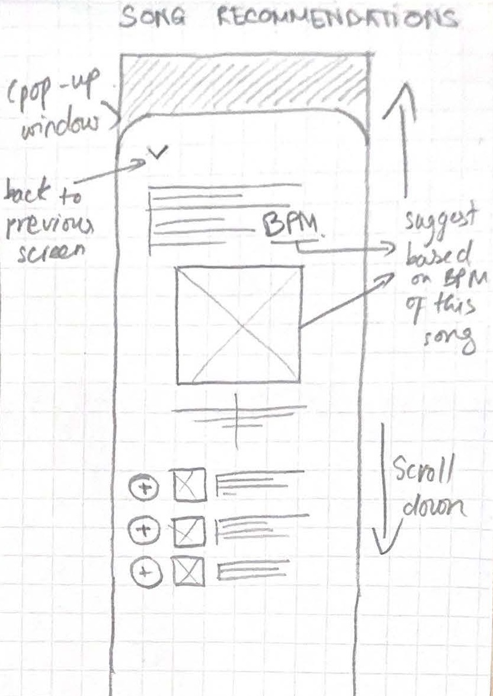
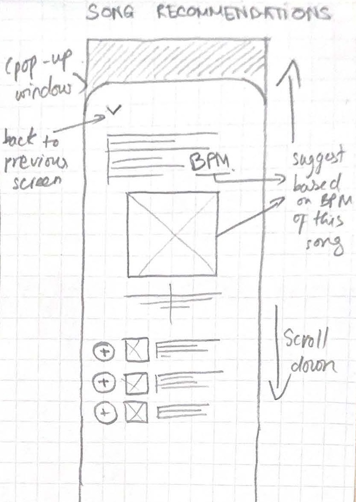

A perfect cardio session starts with the perfect playlist.
This project aims to introduce a new feature on the music streaming app Spotify called card.io.
card.io is catered towards the fitness community and aims to improve the cardio running experience with personalized music selection and playlists.
I worked on this project individually as my own exploration of the UI design field in my undergraduate degree.
Project type:
UI Design
Duration:
1.5 month
Role:
User Interface Designer
During this post-pandemic era, gym/ fitness culture has experienced a big jump in popularity. Being at home for so long had resulted in an involuntarily reflection on one’s physical and mental health.
Many had started home workouts, many had purchased their subscriptions on gym memberships, in order to achieve a sense of physical well-being.
Social media also played a role in this rising popularity of fitness culture. The pandemic was a one in a lifetime opportunity for fitness-related content creator to make an impact on this ongoing phenomenon.
...And why does this feature matter?
Research has shown that a good playlist can help to ease workouts, reduce fatigues, and increase athletic performance by affecting both heart rate and brain wave.
Studies also show that music that is motivational and synchronized with your exercises have desirable physical and psychological effects on your workouts.
➡️ For this reasons, many content creators have been putting out music-related content as a way of getting high engagement on social channels like TikTok. One of the trends is to make playlist of songs to listen to while doing cardio activities.
INTERVENTION OPPORTUNITY
Many runners actively seek for motivation and consistency to finish their workout. A feature that aims to enhance the running experience through personalized soundtracks and real-time feedback, can make each run more engaging and enjoyable.
➡️ Problem statement
"How can I create an engaging running experience that motivates runners to finish their run through personalized playlists and music selections?"
Offer personalized, pre-made cardio playlists with strategically organized songs that matches different phases of the session: warm up, endurance and cool down (Auto mode)


Offer a more personalized running experience that takes user’s physical attributes and goals into consideration through questionnaire.


Offer real-time report of important information related to the session such as timer, current song’s BPM, suggested MPH, suggested incline, etc.


Assist runners in editing their cardio playlist by suggesting songs within the same range of BPM, or sorting songs based on BPM (Manual mode)


Users seek music with BPMs that matches their cardio pace and heavily rely on content creators for specialized playlists featuring certain artists or albums.
Key factors in choosing cardio music include pace, genre, artist, and personal connection.
Since everyone's physique and workout routines are unique, users value playlists that cater to their specific physical requirements.
INITIAL SKETCHES & DRAFT

 

The first sketches and draft prototype
EARLY HEURISTIC EVALUATION
Consistency & Standard: Not carefully considerated. Straight slidebar design gives the false impression that users can drag the bar (very standard for streaming platforms, such as YouTube, Netflix, etc.), but in reality the bar in card.io is only to signify the progress, not to be interacted


The slidebar is a very standard visibility status indicator in streaming apps, which users can use their fingers to drag them to their desired point.
USER TESTING & INTERVIEWS
Understanding runners' behaviours
Study goals
Core tasks
Some primary responses
“I barely ever put my phone in my pocket. I would rather put it on the treadmill so I can see what song is playing at that moment.”
The user keeps their phone visible on the treadmill, not in their pocket, for easy interaction and information access.
This suggests the phone is stationary but at arm's length.
Values visual confirmation of the current track and possibly other playback details like time remaining or tempo.
Likely wants minimal distractions but appreciates visibility and accessibility.
“If I don’t like the song, I will change to the next one - it’s kinda hard though. Since I was running, having to press my finger on a single point on the screen is hard and I sometimes missed the “next” button.”
Small touch targets (e.g., the “next” button) are difficult to press accurately during physical activity.
The user desires an effortless and distraction-free way to control and access information while running.
Likely values simplicity, ease of access, and minimal effort in interacting with the app.
“It seems like a lot to me at first and took me a few seconds to see the MPH number clearly since I was running so fast! So I just put the phone to sleep and turn it back on when I need to see how far I have come, or what song is playing next.”
Information are displayed all at once (MPH, BPM, Incline.) along with progress bar, which leads to user having cognitive overload especially while they are in motion (running).
Difficulties in reading key metrics
Prioritization of use cases: Progress report of how far the runner has come and music playback can be considered high-priority elements among all elements.
REFINED INTERFACE
Key changes are:

Click here to see card.io's final interface.
Instead of showing information about the run all at once, chunking all information into categories and show 1 at a time.
Integrate a simple swiping interaction instead of tapping to navigate through the categories
Reduce the cognitive overload, optimize for glanceability, and minimize the tapping interaction, which is difficult to perform while running
Replace the progress bar with a circular design for a more intuitive and visually appealing progress indicator.
Opt for a circular layout to align with conventional timer designs, commonly recognized by users.
Incorporate a thick bezel in the circular design to improve glanceability, ensuring users can quickly interpret the information at a glance.